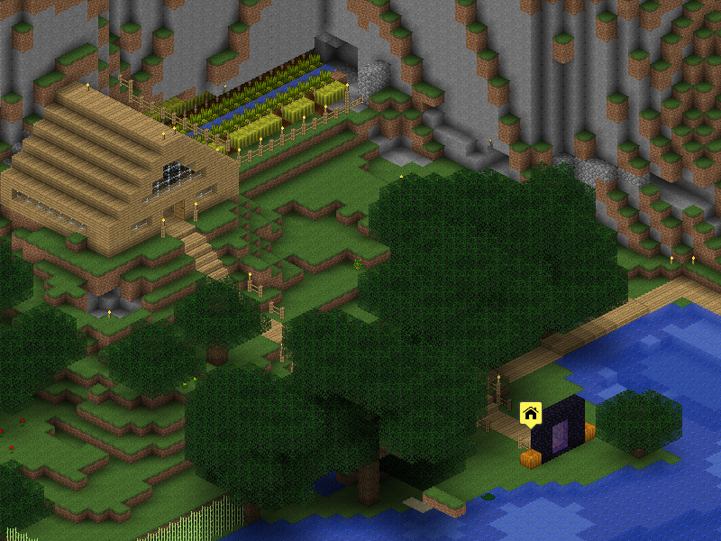

The Minecraft Overviewer¶
See also the Github Homepage and the Updates Blog, and follow us on our Twitter account
Introduction¶
The Minecraft Overviewer is a command-line tool for rendering high-resolution maps of Minecraft worlds. It generates a set of static html and image files and uses the Google Maps API to display a nice interactive map.
The Overviewer has been in active development for several years and has many features, including day and night lighting, cave rendering, mineral overlays, and many plugins for even more features! It is written mostly in Python with critical sections in C as an extension module.
For a simple example of what your renders will look like, head over to The “Exmaple” Map. For more user-contributed examples, see The Example Wiki Page.
Documentation Contents¶
Features¶
- Renders high resolution images of your world, let’s you “deep zoom” and see details!
- Gloriously awesome smooth lighting is here!
(rendermode name is
smooth_lighting) - Customizable textures! Pulls textures straight from your installed texture pack!
- Choose from four rendering angles.
- Generates a Google Maps powered map!
- Runs on Linux, Windows, and Mac platforms!
- Renders efficiently in parallel, using as many simultaneous processes as you want!
- Only requires: Python, Numpy, and PIL (all of which are included in the Windows download!)
- Utilizes caching to speed up subsequent renderings of your world. Only parts that need re-rendering are re-rendered.
- Throw the output directory up on a web server to share your Minecraft world with the internet!
- Run The Overviewer from a command line or on a cron schedule for constantly updated maps! Run it for your Minecraft server world to provide your users with a detailed map!
- Supports Nether and The End dimensions!
- Built-in support for Biomes!
What The Overviewer is not¶
Full disclosure disclaimers of what The Overviewer is not.
It does not run fast. Because of the high level of detail, initial renders of a world can take some time. Expect minutes for medium worlds, hours for large to huge worlds. Subsequent renders are much faster due to the caching.
Also note that speed is improving all the time. We continually make efficiency improvements to The Overviewer. Besides, for the level of detail provided, our users consider it worth the time!
The Overviewer is not targeted at end users. We mainly see Overviewer fitting in best with server operators, rendering their server’s map for all users to view.
You are welcome to use The Overviewer for your single player worlds, and it will work just fine. However, since the only interface is currently command line based, you will need to know a bit about the command line in order to operate The Overviewer.
The Overviewer is not a potato.
Requirements¶
This is a quick list of what’s required to run The Overviewer. It runs on Windows, Mac, and Linux as long as you have these software packages installed:
- Python 2.6 or 2.7 (we are not yet compatible with Python 3.x)
- PIL (Python Imaging Library) or Pillow
- Numpy
- Either a Minecraft Client installed or a textures/ folder for the textures (possibly from a texturepack)
The first three are included in the Windows download. Also, there are additional requirements for compiling it (like a compiler). More details are available in either the Building or Installing pages.
Getting Started¶
The Overviewer works with Linux, Mac, and Windows! We provide Windows and Debian built executables for your convenience. Find them as well as the full sources on our Github Homepage.
If you are running Windows, Debian, or Ubuntu and would like the pre-built packages and don’t want to have to compile anything yourself, head to the Installing page.
Running Windows and not familiar with the command line? Head to the Windows Newbie Guide page.
If you would like to build the Overviewer from source yourself (it’s not that bad), head to the Building page.
For all other platforms you will need to build it yourself. Building the Overviewer from Source.
After you have The Overviewer built/installed see Running the Overviewer and The Configuration File.
Help¶
IF YOU NEED HELP COMPILING OR RUNNING THE OVERVIEWER feel free to chat with us live in IRC: #overviewer on Freenode. There’s usually someone on there that can help you out. Not familiar with IRC? Use the web client. (If there’s no immediate response, wait around or try a different time of day; we have to sleep sometime)
Also check our Frequently Asked Questions page.
If you think you’ve found a bug or other issue, file an issue on our Issue Tracker. Filing or commenting on an issue sends a notice to our IRC channel, so the response time is often very good!